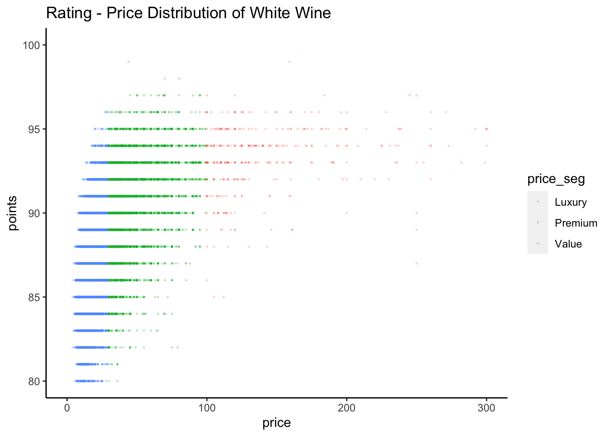

Exploratory analysis
library(tidyverse)
library(modelr)
library(mgcv)## Loading required package: nlme##
## Attaching package: 'nlme'## The following object is masked from 'package:dplyr':
##
## collapse## This is mgcv 1.8-33. For overview type 'help("mgcv-package")'.red_df = read_csv("./wine_data/tidy/wine_red.csv")## Warning: Missing column names filled in: 'X1' [1]## Warning: Duplicated column names deduplicated: 'X1' => 'X1_1' [2]## Parsed with column specification:
## cols(
## X1 = col_double(),
## X1_1 = col_double(),
## country = col_character(),
## description = col_character(),
## designation = col_character(),
## points = col_double(),
## price = col_double(),
## province = col_character(),
## region_1 = col_character(),
## taster_name = col_character(),
## title = col_character(),
## variety = col_character(),
## winery = col_character(),
## year = col_double(),
## type = col_character()
## )white_df = read_csv("./wine_data/tidy/wine_white.csv") ## Warning: Missing column names filled in: 'X1' [1]
## Warning: Duplicated column names deduplicated: 'X1' => 'X1_1' [2]## Parsed with column specification:
## cols(
## X1 = col_double(),
## X1_1 = col_double(),
## country = col_character(),
## description = col_character(),
## designation = col_character(),
## points = col_double(),
## price = col_double(),
## province = col_character(),
## region_1 = col_character(),
## taster_name = col_character(),
## title = col_character(),
## variety = col_character(),
## winery = col_character(),
## year = col_double(),
## type = col_character()
## )red_df_reg =
red_df %>%
filter(year>=2000) %>%
mutate(
bold = str_detect(description, "bold"),
tannis = str_detect(description, "tanni"),
dry = str_detect(description, "dry"),
acidic = str_detect(description, "acidi"),
price_cp1 = (price > 100) * (price - 100),
price_cp2 = (price < 30) * (price - 30)
)
white_df_reg =
white_df %>%
filter(year>=2000) %>%
mutate(price_cp1 = (price > 100) * (price - 100),
price_cp2 = (price < 30) * (price - 30))Fit models for red wine points
fit_1 = lm(points ~ price + year + bold + tannis + dry + acidic
,
data = red_df_reg)
fit_1 %>%
broom::tidy()## # A tibble: 7 x 5
## term estimate std.error statistic p.value
## <chr> <dbl> <dbl> <dbl> <dbl>
## 1 (Intercept) -117. 7.08 -16.6 1.56e- 61
## 2 price 0.0279 0.000239 116. 0.
## 3 year 0.102 0.00352 28.9 1.44e-182
## 4 boldTRUE 0.918 0.0691 13.3 2.96e- 40
## 5 tannisTRUE 0.450 0.0218 20.6 3.94e- 94
## 6 dryTRUE -0.566 0.0341 -16.6 6.55e- 62
## 7 acidicTRUE 0.105 0.0270 3.89 1.02e- 4linear_mod_red = lm(points ~ price, data = red_df_reg)
pwl_mod_red = lm(points ~ price + price_cp1 + price_cp2, data = red_df_reg)
smooth_mod_red = gam(points ~ s(price), data = red_df_reg)Fit models for white wine points
fit_2 = lm(points ~ price + year, data = white_df_reg)
fit_2 %>%
broom::tidy()## # A tibble: 3 x 5
## term estimate std.error statistic p.value
## <chr> <dbl> <dbl> <dbl> <dbl>
## 1 (Intercept) -187. 9.10 -20.6 2.18e- 93
## 2 price 0.0345 0.000433 79.6 0.
## 3 year 0.136 0.00452 30.2 4.21e-197linear_mod_white = lm(points ~ price, data = white_df_reg)
pwl_mod_white = lm(points ~ price + price_cp1 + price_cp2, data = white_df_reg)
smooth_mod_white = gam(points ~ s(price), data = white_df_reg)red_df_reg %>%
filter(price >= 100) %>%
ggplot(aes (x = price, y = points, color = country))+
geom_point()
white_df_reg %>%
filter(price >= 100) %>%
ggplot(aes (x = price, y = points, color = country))+
geom_point()
white_df_reg %>%
filter(points > 84) %>%
ggplot(aes (x = country, y = price))+
geom_boxplot()## Warning: Removed 2256 rows containing non-finite values (stat_boxplot).Plot the 3 models with residuals
library("patchwork")
a =
red_df_reg %>%
gather_predictions(linear_mod_red, pwl_mod_red, smooth_mod_red) %>%
mutate(model = fct_inorder(model)) %>%
ggplot(aes(x = price, y = points)) +
geom_point(alpha = .05) +
geom_line(aes(y = pred), color = "dark red") +
facet_grid(~model)
b =
white_df_reg %>%
gather_predictions(linear_mod_white, pwl_mod_white, smooth_mod_white) %>%
mutate(model = fct_inorder(model)) %>%
ggplot(aes(x = price, y = points)) +
geom_point(alpha = .05) +
geom_line(aes(y = pred), color = "yellow") +
facet_grid(~model)
a## Warning: Removed 14613 rows containing missing values (geom_point).## Warning: Removed 4871 row(s) containing missing values (geom_path).
b## Warning: Removed 7290 rows containing missing values (geom_point).## Warning: Removed 2430 row(s) containing missing values (geom_path).# white_cv_df =
# crossv_mc(white_df_reg, 100) %>%
# mutate(
# train = map(train, as_tibble),
# test = map(test, as_tibble))
# white_cv_df =
# white_cv_df %>%
# mutate(
# linear_mod = map(train, ~lm(points ~ price, data = .price)),
# pwl_mod = map(train, ~lm(armc ~ weight + weight_cp, data = .x)),
# smooth_mod = map(train, ~gam(armc ~ s(weight), data = as_tibble(.x)))) %>%
# mutate(
# rmse_linear = map2_dbl(linear_mod, test, ~rmse(model = .x, data = .y)),
# rmse_pwl = map2_dbl(pwl_mod, test, ~rmse(model = .x, data = .y)),
# rmse_smooth = map2_dbl(smooth_mod, test, ~rmse(model = .x, data = .y)))
#